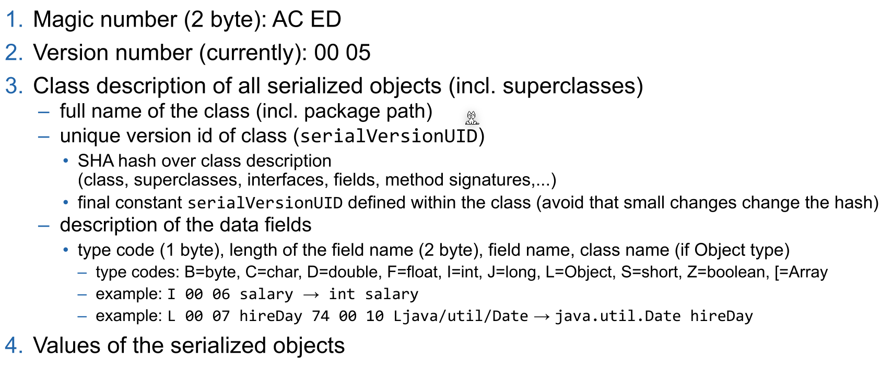
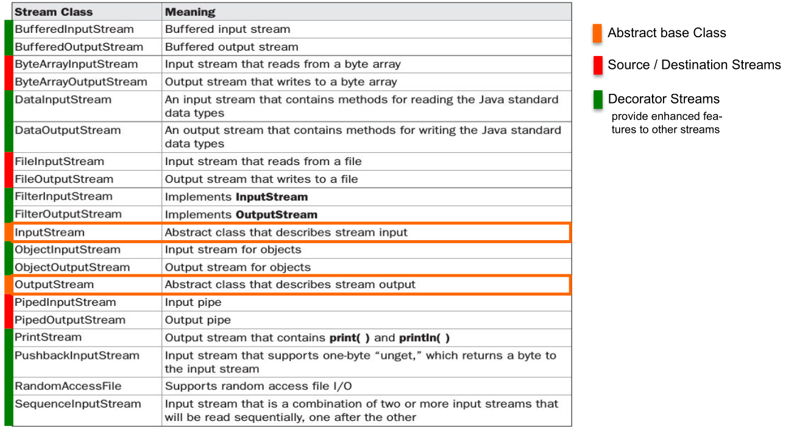
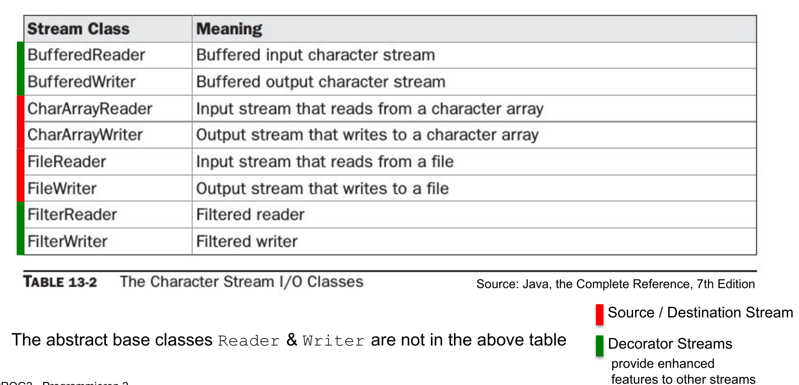
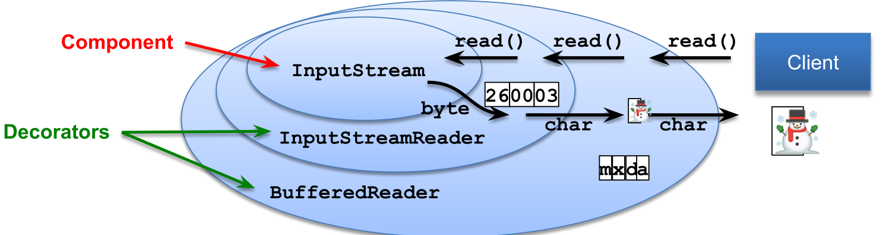
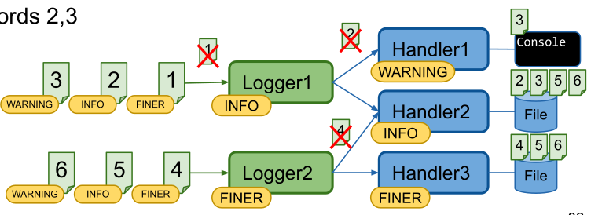

IO
Serializing
In order for an object to be serializable in needs to implement the marker interface Serializable.

Fields can be marked with transient (private transient Date someDate;) if they shouldn't be serialized. This can be usefull for serializing classes which contain unserializable classes (like dates, file descriptor, network sockets or db connections).
Employee harry = new Employee("Dirty Harry", 50000, LocalDate.of(1967, 3, 11));
Manager boss = new Manager("Walter Smith", 80000, LocalDate.of(1950, 12, 4)); // Manager is extending Employee
boss.setAssistant(harry);
// Save (serialize) two objects to the file empolyee.dat
try (ObjectOutputStream out = new ObjectOutputStream(new FileOutputStream("employee.dat"))) {
// objects are written in the given order to the file
out.writeObject(harry); // write object Dirty Harry
out.writeObject(boss); // write object Walter Smith
out.writeInt(12); // write value of primitive type int
}
// Load (deserialize) two objects from the file employee.dat
try (ObjectInputStream in = new ObjectInputStream(new FileInputStream("employee.dat"))) {
// number and order of reading the objects must match, also the type must be compatible (match or super class)
Employee e1 = (Employee) in.readObject(); // object for Dirty Harry
Employee e2 = (Employee) in.readObject(); // object for Walter Smith
// e2.getClass().getName() would return type Manager
int count = in.readInt(); // read primitive type int
}
IO Streams


A byte stream can be converted to a char stream with InputStreamReader and OutputStreamWriter respectively.

InputStream and Readers usually allow to skip a number of bytes/chars with skip(long n). However, OutputStreams and Writers don't allow removing or inserting into a file, only appending (FileOutputStream(File file, boolean append)) or replacing is supported.
RandomAccessFile
Allows reading from anywhere in the file, not just skipping bytes like an InputStream. This can be done with the seek(long pos) or the skipBytes(long n) methods.
// create file and write some data into it
File f = new File("randomaccessfile.txt");
try (BufferedWriter bw = new BufferedWriter(new FileWriter(f,true))) {
for(int i=2; i<=10; i++) {
if( i%2 == 0) {
bw.write(Integer.toString(i)); bw.newLine();
}
}
}
try (RandomAccessFile randomFile = new RandomAccessFile(f,"rw")) { // read-write mode
for(int i=1; i<=5; i++){
randomFile.seek(randomFile.length()); // set file pointer to end of file (EOF)
randomFile.writeBytes(Integer.toString(i)); // append "1","2","3","4","5" at EOF
}
}
try (RandomAccessFile randomFile = new RandomAccessFile(f, "r")) { // read-only mode
int i = (int) randomFile.length(); // get length of file in bytes
System.out.println("Length: " + i);
randomFile.seek(i-3); // set file pointer to EOF-3 bytes
for(int ct = 0; ct < 3; ct++){
byte b = randomFile.readByte(); // read byte(s)
System.out.println((char)b);
}
}
Charset
An instance of Charset can be either obtained by Charset.forName(<name>), Charset.getDefaultCharset() or Charset.getAvailableCharsets(). Alternatively StandardCharsets.UTF_8 can be used.
Logger
Each Logger instance has a list of Handlers. A Handler can be used by multiple Loggers and handles the storing of the logging messages (like writing it to a file, or displaying in the console). Both the Logger and the Handler have a Level. And each will only forward messages which have a level higher than their configured level.
The possible levels are: SEVERE(1000), WARNING(900), INFO(800), CONFIG(700), FINE(500), FINER(400), FINEST(300).

The following properties file is an example logging configuration.
## configure handlers
java.util.logging.ConsoleHandler.level = ALL
## File handler configuration
## see https://docs.oracle.com/en/java/javase/11/docs/api/java.logging/java/util/logging/FileHandler.html
java.util.logging.FileHandler.level = ALL
# %g = generation number, %u = unique number to resolve conflicts
java.util.logging.FileHandler.pattern = log-%g-%u.log
# use SimpleFormatter instead of default XMLFormatter
java.util.logging.FileHandler.formatter = java.util.logging.SimpleFormatter
java.util.logging.FileHandler.encoding = UTF-8
# max log file size in byte before switching to next generation (=1kB); 0 = unlimited
java.util.logging.FileHandler.limit = 1024
# max number of generations (%g) before overwriting (5 -> 0..4)
java.util.logging.FileHandler.count = 5
java.util.logging.FileHandler.append = true
## configure Formatter (see SimpleFormatter documentation)
java.util.logging.SimpleFormatter.format = [%1$tc] %4$s: %5$s {%2$s}%6$s%n
## configure default log level (for all loggers, if not overwritten below)
.level = INFO
## configure root logger ""
handlers = java.util.logging.ConsoleHandler
level = INFO
## Application specific logger configuration
# loggers starting with "ch.zhaw.prog2.io" -> write to console and file and do not forward to parent handlers
ch.zhaw.prog2.io.level = FINE
ch.zhaw.prog2.io.handlers = java.util.logging.FileHandler, java.util.logging.ConsoleHandler
ch.zhaw.prog2.io.useParentHandlers = false
# logger for class ch.zhaw.prog2.io.LogConfiguration
ch.zhaw.prog2.io.LogConfiguration.level = FINEST
A log configuration can be loaded anytime and all already existing loggers will be updated.
InputStream logConfig = this.getClass().getClassLoader().getResourceAsStream("log.properties");
LogManager.getLogManager().readConfiguration(logConfig);